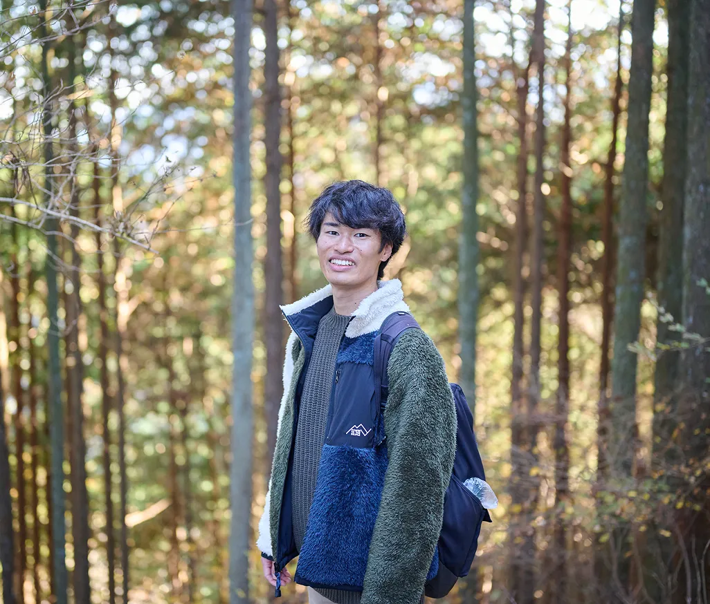
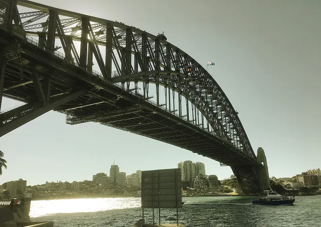
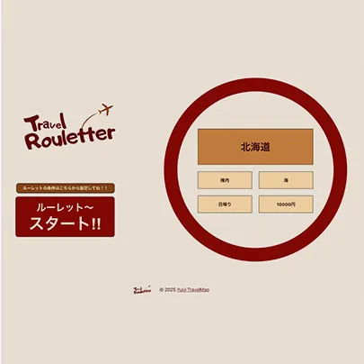
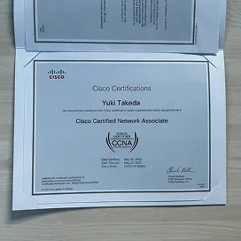
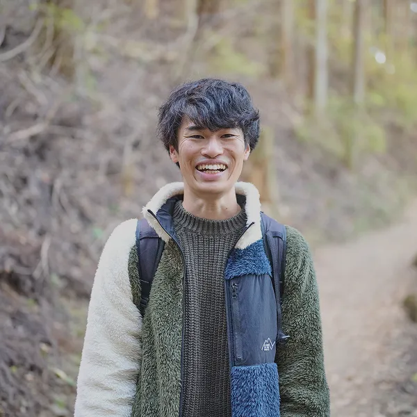
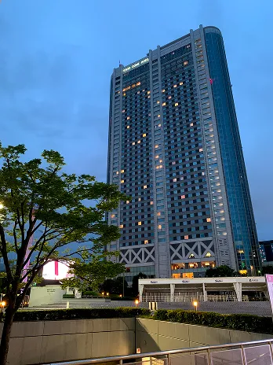
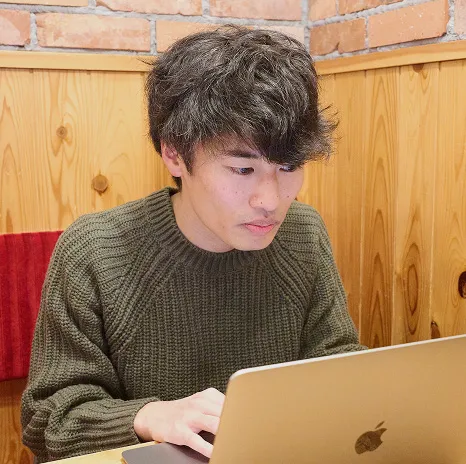
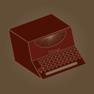
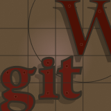

私について
About
Me
人生も、デザインも、旅だと思います。

竹田 侑生Yuki Takeda
1995年生まれ、東京都江戸川区出身、神奈川県の横浜在住です。
趣味は何よりも旅が大好きです。海外も国内も好きで、行ったことある国の数は15カ国です。見たいスポットのためであれば往復6時間でも歩けます。そのくらい歩くのが大好きです。シドニーの日本食レストランでアルバイトをした際、交通費節約のため2ヶ月間、片道1時間30分かけてオペラハウスを見ながらハーバーブリッジを渡り、通っていたことは今でも思い出です。
普段はコーヒーを飲むことが好きです。私にとってコーヒーは仕事や学習のモチベーション向上、疲れを癒してくれたりといつの間にか必需品になってしまいました。
トルコで往復6時間かけて見に行ったラクダ岩

オーストラリアでアルバイトのため、2ヶ月間渡り続けたハーバーブリッジ
心から求められ・
喜ばれ・感謝される
デザインを追求したいです。
私がデザイナーへの道を目指したきっかけは、趣味で立ち上げた『旅ブログ』です。
「旅行の記録を残し、多くの人に自分の旅行プランをアウトプットしたい」という想いからWordPressテーマを活用し、ブログを公開・運用しました。自ら立ち上げ、インターネット上で自分のブログが閲覧できるようになった時の感動は今も覚えており、そこで伝えたい情報や魅力をコンテンツに落とし込み、多くの方に届けられる面白さ・やりがいを実感しました。この体験より、「今度は自分の手で一からデザインを行い、お客様や利用ユーザーに貢献できる仕事をしたい」と思うようになりました。
2025年1月から『デジタルハリウッドSTUDIO by LIG』へ入学し、デザイン学習がスタートしました。学習にのめり込むほどに「正解のない多種多様な表現やアイデアの追求・発見・学び」「今まで気づけていなかったこと」など、デザインの本質的な魅力・面白さ・奥深さを知ることができています。街中を歩けば未知のデザインに遭遇し、自分の学びとして取り入れられる。まるでデザインも旅をしているのと同じだと気付きました。
これから多くの壁や険しい道に遭遇すると思いますが、前職で培った「お客様視点で考える力」と「状況に応じた臨機応変な対応力」など全ての経験を活かし、お客様が持つ潜在的な課題や魅力を導き出し、コンテンツを通して課題解決や価値創出に貢献します。
私の強み
-
01継続力
私は目標を設定し、達成に向けて継続的に努力することが得意です。
2021年9月にIT業界へ転身し、約4年間で累計2,385時間の学習を継続しています。インフラエンジニアとして資格を3つ取得し、実務に活かしてきました。独学で開発エンジニアの基礎を学び、簡単なアプリを2つ制作しました。デザイン学習においても、目標やスケジュールを立てて学習や制作に励み、日々新たな気付き・課題を発掘し、改善を重ねています。
デザイナーとして転職後も、自発的に多くのデザインに挑戦し、継続的にスキル習得に努めます。


IT業界に入ってから
の学習実績 -
02素直
友人や家族、先輩からの他己評価では素直と言われることが多いです。
小学生の頃から塾の先生や友人からの助言やフィードバックを素直に受け止め、行動する傾向にありました。その姿勢は現在も変わらず、相手の意見やアドバイスに耳を傾けることで、自分だけでは得られない気付きや学びを吸収できます。
私の考えや提案ももちろん大切にしたいですが、デザイナーとして就職後、相手の意図や意見に寄り添うことを大切にし、知見を吸収することで、よりお客様や利用ユーザーが求めるコンテンツ作りに繋げます。

-
03人に喜んでもらうために考えること
人に喜んでもらうことが好きです。人からいただく感謝が、自分にとって仕事をする上での一番のやりがいだと感じています。
そのため、1つ1つの業務において「目的は何か」「誰のためのものか」「どうすることで喜んでもらい、貢献できるか」を常に考え、お客様にとって最適な対応・提案を行うことを大切にしています。
デザイン制作においても、お客様や利用する方の気持ちに寄り添いながら、最適なコンテンツ設計を行うことで課題解決や価値創出に貢献します。


できること
-
01
デザイン
#Photoshop
#Illustrator
#Figma
上記のツールを使用し、バナーやWebサイトなど、企画からデザインまで一貫して制作可能です。何よりもお客様やユーザーの意見を大切にし、価値のあるデザインを目指して制作しています。バナー制作が未熟であるため、特訓中です。
-

02
コーディング
#HTML
#CSS
#JavaScript
命名規則などコード全体の見やすさや、どのデバイスサイズからでも綺麗に見えるように意識しています。
JavaScriptによるアニメーション実装も可能です。ユーザが操作していて心地よい、分かりやすいと思っていただけるように心がけています。 -

03
その他
#Git
#WordPress
前職では、実務でGitによるバージョン管理を行っていたため、基本的なGit操作が可能です。
また、趣味でWordPressテーマを用いた旅ブログを運営しており、基礎的なWordPress操作が可能です。オリジナルテーマ制作に向けても学習中です。
私の人生
20代の私は自分探しの旅をしていました。
大学生の頃はPCが大の苦手で、PC業務メインの会社には入らないと心に誓っていました。しかし、就職したホテルでご縁があり、PC業務がメインの部署に配属されたことでPC業務に対する面白さを見い出し、下記の流れで現在に至ります。
-
2014/3〜2019/4
東京の4年制大学生
英語に憧れ、大学3年生の時に1年間の語学留学（オーストラリア・フィリピン）を経験。その後、某アパレル業界のお店でアルバイトと海外旅行を交互に行い、10カ国以上を歩き回る。
就職活動では、英語を活かせるホテル業界を目指す。 -
2019/4〜2021/8
東京の某ホテル社員
東京にある某ホテルで客室サービスの仕事を経験。電話、接客、客室全体（1,006室）の管理を行い、お客様が快適に楽しく過ごせるよう業務に励む。
そこでPC業務の面白さ、素晴らしさを知る。 -
2021/9〜2025/6
横浜のIT企業社員
もっと専門的にPCスキルを磨き、PC1つで人々の役に立ちたいという想いからIT業界に入る。
インフラエンジニアとしてサーバ構築や運用、ツールのコード改修、AWSを使用した案件など複数現場を経験。 -
2025/1〜
デザイン学習
IT企業でインフラエンジニアの経験、独学で開発エンジニアやデザイン基礎の学習を行う中で、様々なアイデアと表現を形にし、お客様や利用ユーザーに貢献できるデザインに惹かれ、デザイナーを目指す。
2025年1月に念願の『デジタルハリウッドSTUDIO by LIG』に入校し、デザイン学習に専念する。2025年9月に卒業し、Web制作会社への転職を目指し活動中。
私のビジョン
-
01Years later
いち早く何かしらの作業を1人で任せていただけるようになり、チームの戦力となることが目標です。そのため、できる挑戦は全て率先して挑み、関わる全ての方とのコミュニケーション・観察・状況把握を大切にすることで、早いスキル習得・信頼獲得に努めます。
-
03Years later
1つでも多くの得意分野や専門分野を見つけて伸ばし、何かしらで周りから頼られる存在となることが目標です。そのためにも、任せていただいた全ての業務に責任を持ち、求められている以上の成果達成を目指し、全力で努めます。
-
05Years later
制作プロジェクト全体の効率性や価値創造の向上に繋げられる架け橋的な存在となることが目標です。そのためにも、日頃からメンバーとの対話や状況把握を行い、抱える悩みや課題を分析し、メンバーの負担軽減や効率的な制作フローの実現に寄与したいです。